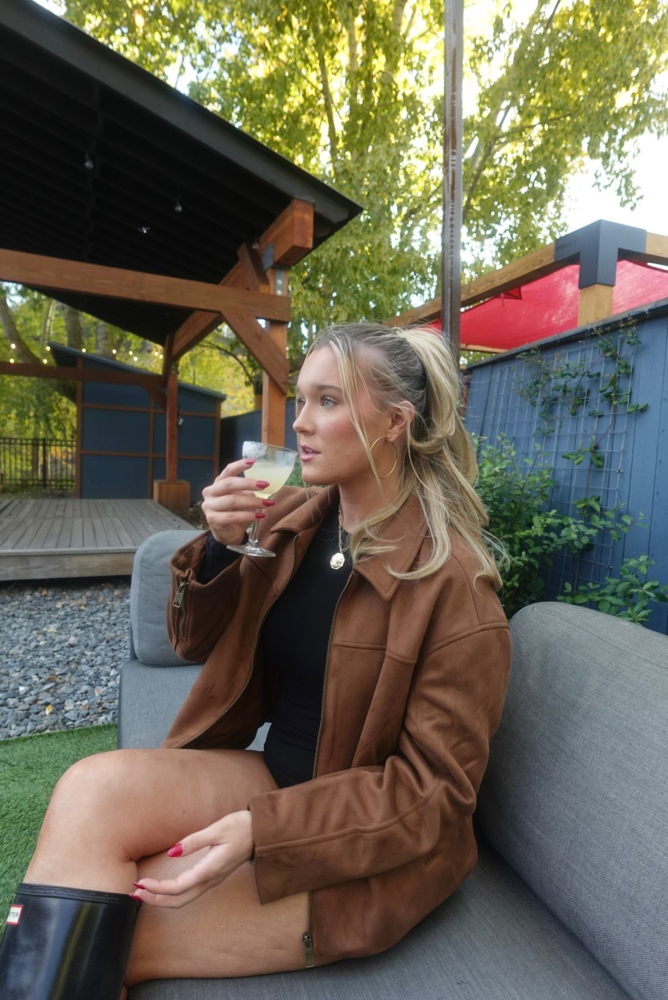

Welcome to Chez Shea Chez
Hi! I'm Shea, a 21-year-old University of Wisconsin senior from New Jersey. Welcome to my cooking page!
The Story Behind ChezSheaChez
My nickname growing up was Shea Shea, pronounce Sh-ay Sh-ay. After taking French for almost 12 years, I have come to love the language and the cuisine. That's how I came up with the name ChezShea (meaning "at Shea's"). That instagram username was taken, so that's how ChezSheaChez came to be!
My Cooking Journey
My love for cooking started with my mom, an amazing chef who cooked almost every meal growing up. Ironically, I came to college with zero cooking skills and relied heavily on takeout. It wasn't until sophomore year that I started learning to cook, beginning with simple (and sometimes questionable!) meals.
When I moved into my new place with a bigger kitchen during junior year, I decided to start this food page. Through this process, I've connected with amazing people who share my passion for cooking.
My goal is to keep growing, learning, and sharing my culinary journey with all of you!